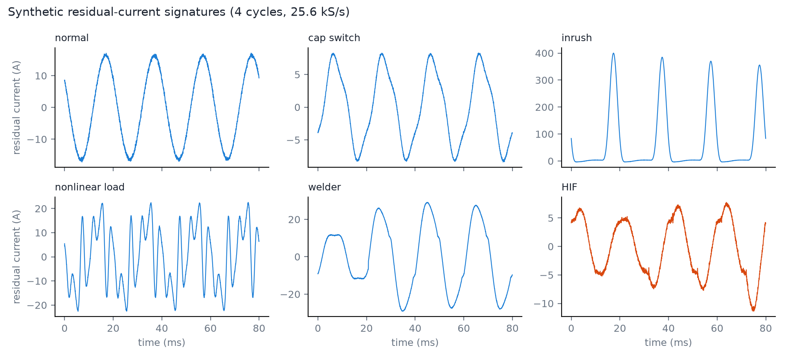
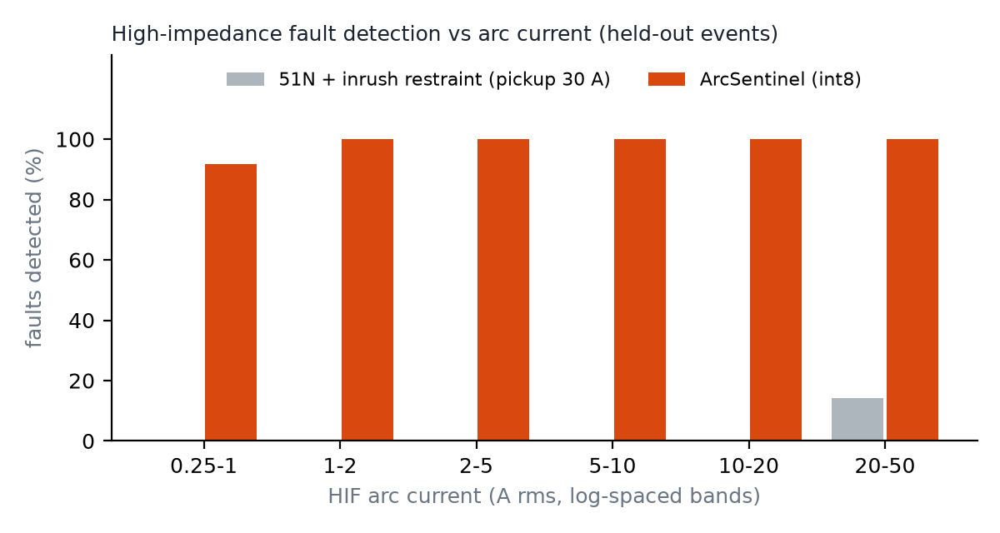
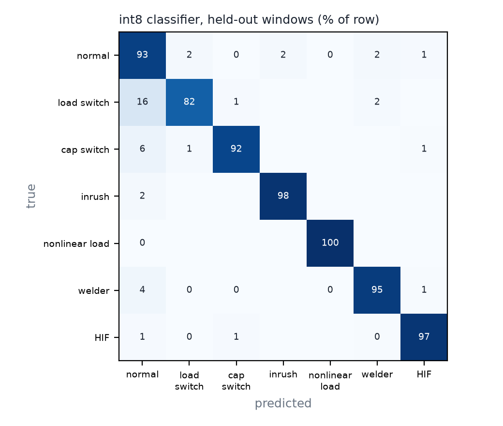

In one sentence: ArcSentinel turns the Icicle Kit into a three-layer, mixed-criticality protection relay. FPGA fabric analyses every power cycle with FFT, wavelet and int8-neural-network engines to find the faint, erratic signature of a downed live conductor. A bare-metal RISC-V hart makes the trip decision deterministically, and Linux reports it over redundant IEC 61850 networks.
A high-impedance fault (HIF) occurs when an energised distribution conductor touches a poorly conducting surface such as dry grass, sand, asphalt, concrete or a tree branch. The resulting current is often only a few amperes to a few tens of amperes, comparable to normal load unbalance. Overcurrent relays set above that unbalance therefore never see it. Meanwhile the contact arcs, randomly and asymmetrically, at thousands of degrees. The line stays energised, so the arc can ignite vegetation, and a live wire lying on a street or field is lethal to anyone who touches it. Power lines were implicated in the 2018 Camp Fire in California [4], the deadliest in the state’s history, and in the 2023 Lahaina fire on Maui.
HIFs are hard to detect because their only reliable fingerprints are subtle. They include harmonic and interharmonic content, high-frequency energy at each arc re-ignition, half-cycle asymmetry, and above all cycle-to-cycle randomness [1, 2]. Everyday events share parts of that signature: transformer inrush, capacitor switching, welders, rectifier loads and load steps. Separating them needs rich, continuous, multi-channel signal analysis with a dependable real-time decision path, which is exactly what an FPGA SoC offers.
HIF detection itself is not new, and we do not claim it is. The table summarises what exists and the gap ArcSentinel targets.
| Approach | Examples | Limitation relevant to us |
|---|---|---|
| HIF functions in premium feeder relays | SEL Arc Sense Technology; GE Multilin Hi-Z; similar functions from other major vendors | Proprietary, closed algorithms tied to high-end relay platforms; costly to deploy across many rural feeders |
| Research edge device (closest to us) | UNSW / NewSouth Innovations, US 12,032,037 B2 (granted 2024) [6]: FPGA framing and FFT, log band-energy “image”, lightweight CNN on a processor, pole-mounted; 98.67% offline accuracy | Classification runs on a processor (115 ms worst-case latency on its real-time testbed); no independent hard-wired protection path, redundant networking or built-in self-test described |
| Network-level and sensor approaches | REFCL earth-fault current limiters (Victoria, Australia); SDG&E falling-conductor protection; line sensors such as IND Technology EFD and Gridware | Substation-scale capital equipment, or sensing that complements rather than replaces a protection decision at the feeder |
What is new in ArcSentinel:
“Couldn’t a microcontroller do this?” The arithmetic per cycle is modest. The system requirements are what demand the FPGA SoC:
We will quantify this rather than just assert it. SmartHLS sources are plain C++, so the same feature-and-inference code is compiled for the U54 cores and benchmarked against the fabric for latency, p99.9 jitter, CPU load and energy (from the on-board PAC1934).
| Icicle Kit capability | How ArcSentinel uses it |
|---|---|
| 254K LE fabric + Math blocks + LSRAM | ADC sequencer, CoreFFT, SmartHLS feature engine, int8 MLP, 50/51N protection, replay injector, recorder |
| 5-core RISC-V MSS, AMP | Hart 4 bare-metal protection decision; harts 1–3 Linux; E51 HSS supervision (secure boot, watchdog, ECC scrub) |
| Dual Gigabit Ethernet (GEM0/GEM1) | IEC 62439-3 PRP redundant station bus; IEEE 1588 PTP time sync on the GEM |
| 2 GB LPDDR4, eMMC | Replay & pre/post-trigger waveform buffers; COMTRADE archive and rootfs |
| PAC1934 power monitor | Per-rail power → energy per analysed cycle, fabric vs software |
| 40-pin header (fabric I/O), mikroBUS, LEDs, switches | MCP3914B ADC link with fabric-timed SPI; trip relay output; alarm LEDs; test buttons |
See the accompanying System Block Diagram (2 pages). In summary:
Before applying, we built a Python golden model (feasibility/arcsentinel_model.py) that implements the exact feature set, window logic, int8 quantization and security counter planned for hardware. HIFs use the classic Emanuel two-diode arc model [1]. Its breakdown voltages are random and asymmetric, its resistances vary cycle to cycle, and it adds build-up, intermittent extinction and HF bursts at re-ignition. Arc-current amplitudes are drawn log-uniformly from 0.5 to 50 A; because the arc conducts for only part of each cycle, the measured arc current in the test set spans 0.4–40 A rms, reaching down to the sub-ampere currents typical of vegetation contact. HIFs are placed on a simulated 11 kV feeder with noise, ±0.1 Hz frequency drift and realistic unbalance, and tested against six look-alike classes. The conventional baseline is a sensitive 51N element (30 A, 10-cycle delay) with 2nd-harmonic inrush restraint, as real feeder relays use.



| Result (held-out test set, 840 events, independent seed) | ArcSentinel (int8) | 51N + inrush restraint |
|---|---|---|
| HIF events detected (dependability), 120 events, 0.4–40 A rms measured arc current | 98.3% | 2.5% |
| … sub-1 A arcs (24 events) / 1–50 A arcs (96 events) | 91.7% / 100% | 0% / 3.1% |
| Look-alike events with no operation (security), 720 events | 100% (0 false alarms) | 98.6% (10 welder trips) |
| Detection time after HIF onset, median / 95th percentile | 0.28 s / 0.32 s | n/a |
| Window accuracy float → int8 (agreement 98.7%) | 95.2% → 94.8% | n/a |
| Model size / compute | 1,575 int8 params / 1,520 MAC | n/a |
| Item | Purpose |
|---|---|
| MCP3914B adapter board | 8-ch simultaneous-sampling ADC on the 40-pin header |
| Op-amp front-end (e.g. MCP6022), RC filters | Scaling and anti-aliasing |
| USB audio interface (≥4 outputs) or MCP4728 DAC | ±1 V analog fault replay (HIL) |
| 12 V AC transformer + small CT + resistive loads | Safe live-signal demo (no mains) |
| 2 Ethernet switches + PC with 2 NICs | PRP LAN A/B, GOOSE subscriber, Wireshark |
| Opto-isolated relay module | Trip output |
Estimated extra cost under US$120. All testing is at safe low voltage.
| Block | Source |
|---|---|
| MSS, PF_CCC, PF_TVS, CoreGPIO, MIV_IHC | Libero SoC catalog |
| CoreFFT (512-pt, streaming) | Libero SoC catalog |
| CoreAXI4Interconnect, CoreAXI4DMAController | Libero SoC catalog |
| feature_engine, window_stats, mlp_int8 | SmartHLS (C++) — ours |
| adc_seq, replay_inj, ocp_50_51, trip_logic | Verilog RTL — ours |
| HSS, OpenSBI, U-Boot, Yocto/Buildroot AMP | Microchip PolarFire SoC BSP |
| MPFS HAL bare-metal, RPMsg (OpenAMP) | Microchip SoftConsole |
| libiec61850, linuxptp, Linux HSR/PRP | Open source (licences in §11) |
| Block | Logic elements | Math blocks | LSRAM | Notes |
|---|---|---|---|---|
| ADC sequencer + calibration + residual | ~2 K | 2 | 0 | SPI, CRC, sample counter |
| CoreFFT 512-pt, time-multiplexed over 8 ch | ~7 K | ~12 | ~8 | 8 FFTs per 20 ms is <1% duty |
| Feature engine + window stats (SmartHLS) | ~10 K | ~14 | ~6 | magnitudes via CORDIC / sqrt |
| int8 MLP, 16 parallel MACs (SmartHLS) | ~5 K | 16 | 2 | weights in LSRAM, reloadable |
| 50/51/N protection + trip logic | ~2 K | 4 | 0 | sample-based, <1 ms |
| Replay injector + recorder DMA + AXI/FIC glue | ~12 K | 0 | ~4 | CoreAXI4DMAController |
| Total (estimate) | ~38 K (~15%) | ~48 | ~20 | Large margin for multi-feeder lanes |
sysrq-trigger) during a replayed fault and show the trip still happens. We unplug LAN A during a trip and show the GOOSE still arrives on LAN B.| Metric | Target | Measured how |
|---|---|---|
| HIF dependability / security (replay + HIL) | ≥ 95% / ≥ 99.5%, 0 on confuser set | Randomized held-out libraries |
| Dependability on real recorded faults (VCIT) | Report by current band | Replay of public field-test data |
| HIF detection time after onset | median ≤ 0.5 s | Fabric timestamps |
| Instantaneous overcurrent: sample → trip output | < 1 ms | Oscilloscope |
| Per-cycle features + inference latency / jitter | < 50 µs / < 1 µs | Fabric cycle counters |
| Decision → GOOSE on wire (both LANs) | < 4 ms | HW-timestamped capture |
| Trip messages lost with one LAN failed | 0 | PRP link-cut test |
| Fabric vs U54 software: speed-up, p99.9 jitter, energy | Report (expected >10× lower jitter) | Same C++ source |
| Fabric utilisation | < 25% LE | Libero reports |
Pre-kit work (Oct–Nov) needs no hardware: golden-model validation on the VCIT real fault data, SmartHLS C++ models and co-simulation, RTL simulation, the Yocto AMP build.
| Work package (owner) | 1 | 2 | 3 | 4 | 5 | 6 | 7 | 8 | 9 | 10 | 11 | 12 | 13 | 14 | 15 | 16 | 17 |
|---|---|---|---|---|---|---|---|---|---|---|---|---|---|---|---|---|---|
| Kit bring-up: reference design, AMP Linux + bare-metal, PAC1934 (B) | |||||||||||||||||
| ADC sequencer, replay injector, recorder DMA (A) | |||||||||||||||||
| Feature engine + CoreFFT, bit-exact vs golden (A, C) | |||||||||||||||||
| 50/51N protection + trip logic (A) | |||||||||||||||||
| Dataset v2, training, int8 MLP in SmartHLS (C, A) | |||||||||||||||||
| Bare-metal decision logic + RPMsg (B) | |||||||||||||||||
| MVP: replay → features → int8 → HIF trip, end-to-end | ◆ | ||||||||||||||||
| Linux: GOOSE/MMS, PRP, PTP, COMTRADE, web HMI (B) | |||||||||||||||||
| Analog HIL, test campaign, SW baseline, power (C) | |||||||||||||||||
| Optimization, robustness, 60 Hz, multi-feeder lane (A, B) | |||||||||||||||||
| Documentation, README, demo video (all) | |||||||||||||||||
| Final submission (buffer week 17) | ◆ |
Roles: A, FPGA fabric (RTL, SmartHLS, CoreFFT, Libero integration and timing). B, embedded software (AMP, bare-metal decision logic, Linux, IEC 61850, PRP/PTP). C, algorithms and validation (dataset, training and quantization, HIL, test campaign, documentation). Our team has two members (Hemanth Chilakala, Tanmaya Kumar), so C’s tasks are shared between A and B. Weekly integration builds; each work package ends with a test that must pass. The MVP milestone in week 10 guarantees a working demo even if stretch goals slip.
| Risk | Likelihood | Mitigation |
|---|---|---|
| Limited real HIF field data | High | Validate on the public VCIT field-test database [7] before hardware arrives; physics-based randomized arc models covering wide parameter ranges; add utility field records where licensing permits; conservative security counter; alarm-only mode for first deployments. |
| SmartHLS feature engine misses timing or grows too large | Medium | Throughput needed is tiny (8 FFTs per 20 ms), so we can pipeline less and clock lower. Fallback: CoreFFT with RTL glue, and the MLP moves to U54 #4 (1,520 MAC in <10 µs), keeping determinism. |
| MCP3914B adapter delays | Medium | Replay injector allows full-pipeline development without the ADC. Alternative SPI ADC via mikroBUS as backup. |
| AMP / RPMsg integration issues | Low–Med | Start from Microchip’s supported Icicle AMP machine (mpfs-icicle-kit-amp) and its RPMsg demos; bring-up in weeks 1–2. |
| Bare-metal hart lacks fabric trip I/O by default | Medium | In Microchip’s default AMP configuration, context B owns only MMUART3. We extend the HSS payload and PMP configuration so hart 4 owns the FIC address window of the score and trip registers, and verify that Linux cannot reach it. |
| Overlap with prior art / patents | Low–Med | Detection method deliberately differs from the patented band-energy-image + CNN approach [6]; the claimed novelty is the safety architecture; freedom-to-operate review before any commercial use. |
| PRP / PTP configuration on the GEMs | Low–Med | Mainline Linux HSR/PRP driver; Microchip’s documented Linux PTP on GEM. Fallback: duplicate-send GOOSE on both ports from the application. |
| Classifier over-fits synthetic data | Medium | Held-out generators with independent seeds; parameter-range extrapolation tests; features chosen for physical meaning (explainable), not raw samples. |
| Safety during testing | — | No mains-voltage experiments. All signals are ≤ 12 V AC or ±1 V DAC outputs. |
Microchip IP: Libero SoC catalog cores (MSS, PF_CCC, PF_TVS, CoreFFT, CoreAXI4Interconnect, CoreAXI4DMAController, CoreGPIO, MIV_IHC), HSS and the PolarFire SoC BSP, used under Microchip licence terms. Open source: Linux kernel (GPL-2.0), OpenSBI (BSD-2), U-Boot (GPL-2.0), linuxptp (GPL-2.0), libiec61850 (GPL-3.0; the application will comply or use a commercial licence), OpenAMP (BSD-3), NumPy and Matplotlib (BSD). AI tools: Claude (Anthropic) assisted in drafting proposal text, diagram layout and scaffolding of the Python feasibility model. All technical content was reviewed by the team, the model was run and its results checked by the team, and the team owns and fully understands the design.